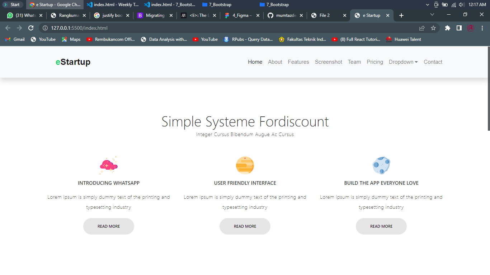

Section 2 Version Control and Branch Management (Git)
Resume section 2 Version Control and Branch Management (Git)
Link Repository Tugas Praktikum
Dari materi version control and branch management git dapat disimpulkan bahwa :
1. version control system (git) ini harus dipahami oleh semua programmer karena dalam
pembuatan project itu pasti dilakukan perubahan sebelum proyek itu menjadi proyek
yang benar-benar clean.
2. git dan github sangat penting bahkan wajib dipelajari seorang programmer terutama dalam
mengerjakan project secara kolaboratif agar management perubahan itu dapat tertata rapi dan
dapat diketahui siapa yang melakukan atau membuat perubahan kode tersebut. jika ingin
melakukan perbaikan atau pembatalan perubahan dapat dilakukan dengan mudah.
3. dalam proses pengembangan aplikasi ada beberapa tahap yang dilakukan untuk memanagement
hal tersebut.
- membuat branch untuk melakukan pengembangan (develop)
- menambahkan perubahan fitur baru tersebut dengan memanggil command git add dan git commit. setelah itu mengupload perubahan tersebut ke github dengan menggunakan git push
- melakukan checkout ke branch develop lalu menggabungkan perubahan ke kodingan awal dengan memanggil command git merge
- mengetes aplikasi yang telah dilakukan pengembangan dan perubahan di branch develop. Jika sudah yakin aplikasi tersebut berhasil maka langkah selanjutnya melakukan checkout ke branch utama (main/master) dan melakukan penggabungan kode (merge)
Section 3 UI UX
Resume section 3 Introduction UI UX
Link Repository Tugas Praktikum
Dari materi Introduction UI/UX dapat disimpulkan bahwa :
1. Ada 5 tahapan dalam Design Thinking untuk mendapatkan UX, yaitu :
- Emphatize
- Define
- Ideate
- Prototype
- Validate
3. Pada dasarnya UI dibuat untuk memenuhi kebutuhan user yang akan dituju. Jadi, UI dan UX adalah pasangan yang saling berkaitan dan tidak dapat dipisahkan.
Section 4 Figma
Resume section 4 Figma
Link Tugas Praktikum
Dari materi pada section figma dapat disimpulkan bahwa :
1. Figma adalah salah satu tools yang banyak digunakan oleh desainer UI/UX khususnya tampilan
website
yang gratis dan dapat digunakan di windows serta macOS.
2. Alasan mengapa kita harus menggunakan figma daripada tools lain yaitu :
- Gratis
- Dapat digunakan di Windows dan macOS
- Dapat digunakan untuk import file sketch
- Terintegrasi dengan high-quality prototyping
- Kolaborasi dengan tim dapat dilakukan secara realtime
Section 5 HTML
Resume section 5 HTML
Dari materi pada section html dapat disimpulkan bahwa :
1. Ada beberapa kegunaan dari html, diantaranya yaitu :
- Membuat struktur dari halaman website
- Mengatur tampilan dan isi dari halaman web
- Membuat tabel dengan tag HTML table
- Membuat form HTML
- Membuat gambar dengan canvas
- Mempublikasikan halaman website secara online
- Head
- Content / Body
- tag div : div
- tag heading (h1-h6), semakin besar angkanya maka ukuran teks semakin kecil : h1, h2, h3
- tag strong (membuat teks menjadi tebal) : strong atau b
- tag p (untuk membungkus teks menjadi paragraf : p
Section 6 CSS

Resume section 6 CSS
Link Repository Tugas Praktikum1. menambahkan file CSS ke dalam HTML itu ada 3 cara, yaitu :
- Inline CSS
- Internal CSS
- External CSS
- id
- class
- nama tag html
- font-family
- background-color
- padding
- margin
- position
- display
- dan lain sebagainya
Section 7 Bootstrap
Resume section 7 Bootstrap
Link Repository Tugas Praktikum
Dari materi pada section 7 bootstrap, dapat disimpulkan bahwa :
1. Bootstrap adalah salah satu framework CSS yang banyak digunakan oleh seorang programmer
untuk mempermudah dalam membuat suatu tampilan halaman website.
2. Bootstrap banyak digunakan karena :
- Gratis
- Mudah dipelajari
- Cepat
- Responsif
Section 8 Javascript Refreshment
Resume section 8 Javascript Refreshment
Link Repository Tugas Praktikum
Dari materi yang ada di section 8 ini, dapat disimpulkan bahwa :
1. Ada 3 cara pendeklarasian variabel dalam javascript, yaitu :
- Var : Dapat dilakukan redeclaration, dapat dilakukan reassignment, hoisting
- Let : Tidak dapat dilakukan redeclaration, dapat dilakukan reassignment, tidak hoisting
- Const : Tidak dapat dilakukan redeclaration, tidak dapat dilakukan reassignment, tidak hoisting
- concat : menggabungkan dua array atau lebih, dan mengembalikan salinan array yang digabungkan
- map : membuat array baru dengan hasil pemanggilan fungsi untuk setiap elemen array
- foreach : memanggil fungsi untuk setiap elemen array
- slice : memilih bagian dari array dan mengembalikan array baru
- filter : membuat array baru dengan setiap elemen dalam array yang lulus seleksi atau lolos filtering
- reduce : melakukan operasi pada setiap elemen array menjadi nilai tunggal
- synchronous : kode program akan dieksekusi setiap perintah satu persatu sesuai urutan kode
- asynchronous : hasil eksekusi atau output kode tidak selalu berdasarkan urutan kode, akan tetapi berdasarkan waktu proses kode dieksekusi
Section 9 Clean Code
Resume section 9 Clean Code
Link Repository Tugas Praktikum
Setelah mempelajari materi section Clean Code, dapat disimpulkan bahwa :
1. Clean code adalah istilah atau sebutan untuk kode program yang mudah dibaca,
dipahami, dan diubah oleh programmer.
2. karakterisitik dari clean code ada 9, yaitu :
- Mudah dipahami
- Mudah dieja dan dicari
- Singkat namun mendeskripsikan konteks
- Konsisten
- Hindari penambahan konteks yang tidak perlu
- Komentar
- Good function
- Menggunakan konvensi
- Formatting
- KISS (Keep It So Simple)
- DRY (Don't Repeat Yourself)